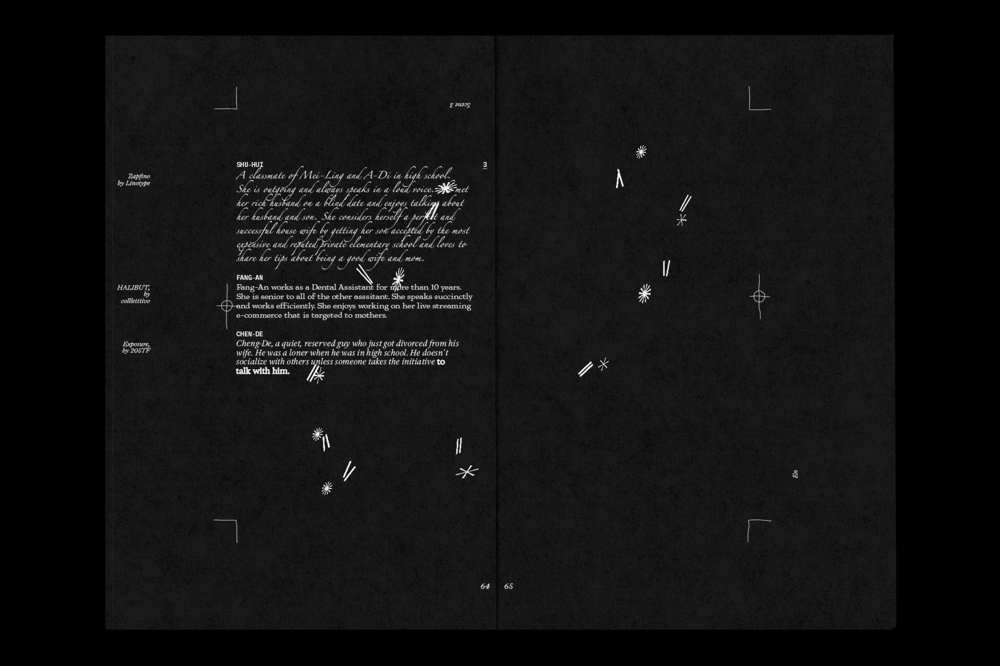
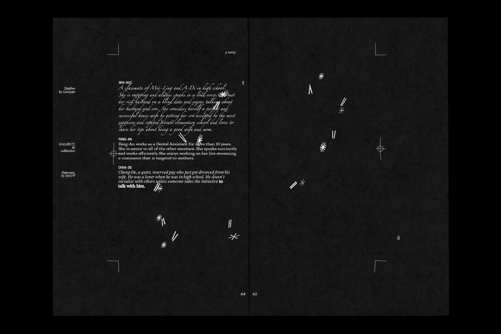
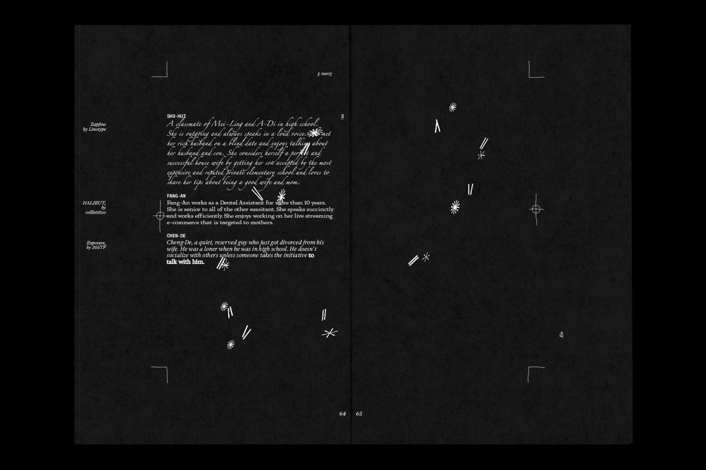

Phantom Scripting
MFA Thesis Show, December 2022.
Book Design, Script Editing.
RISO Print, Laser Print, Perfect Binding.

 

MFA Thesis Show, December 2022.
Book Design, Script Editing.
RISO Print, Laser Print, Perfect Binding.
